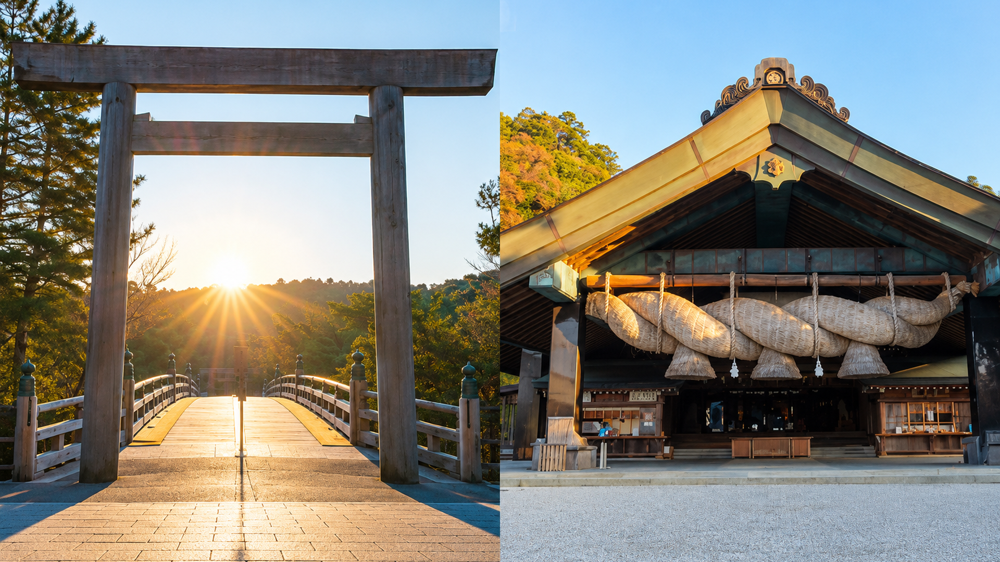
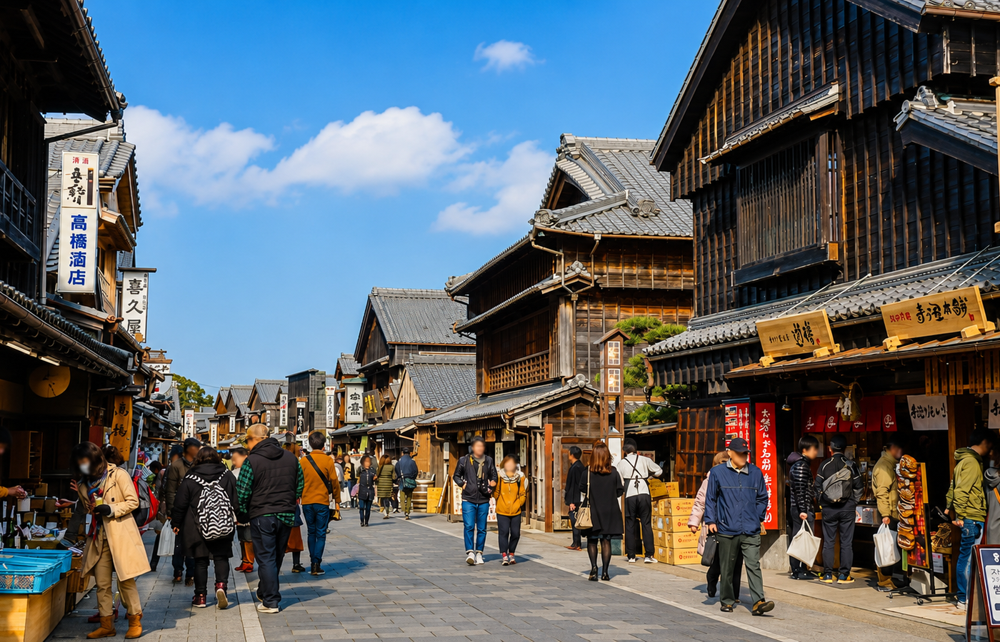
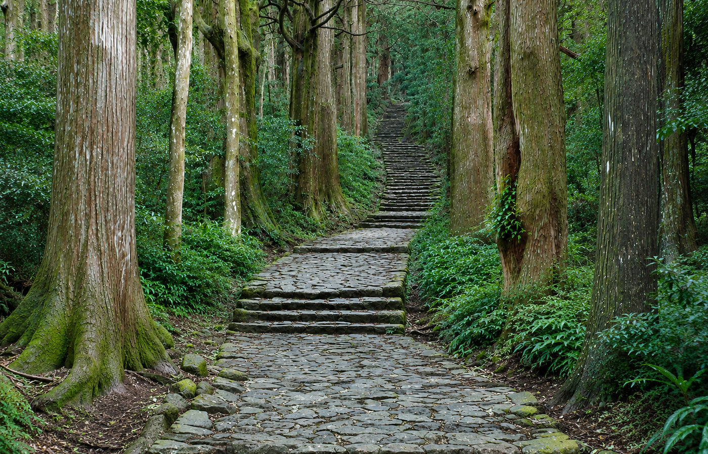
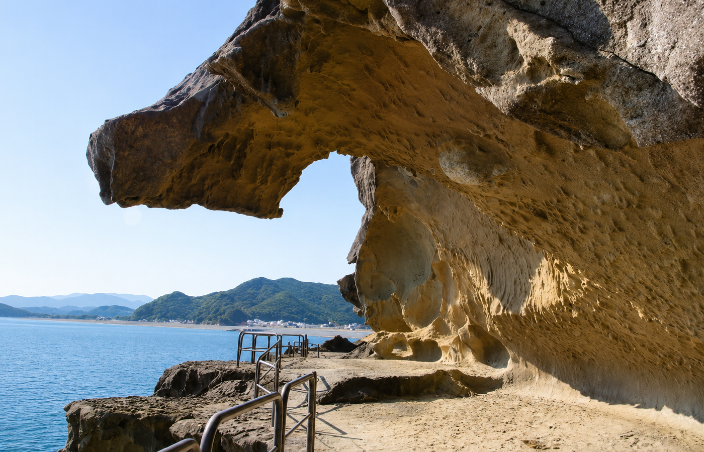
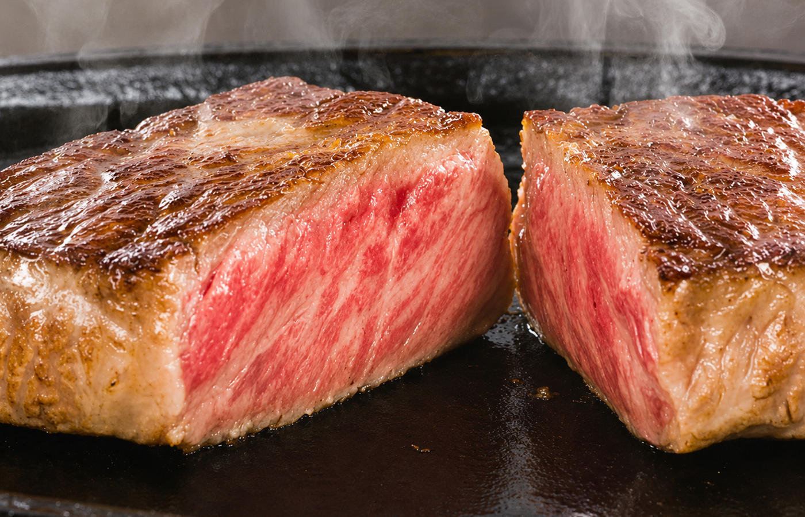
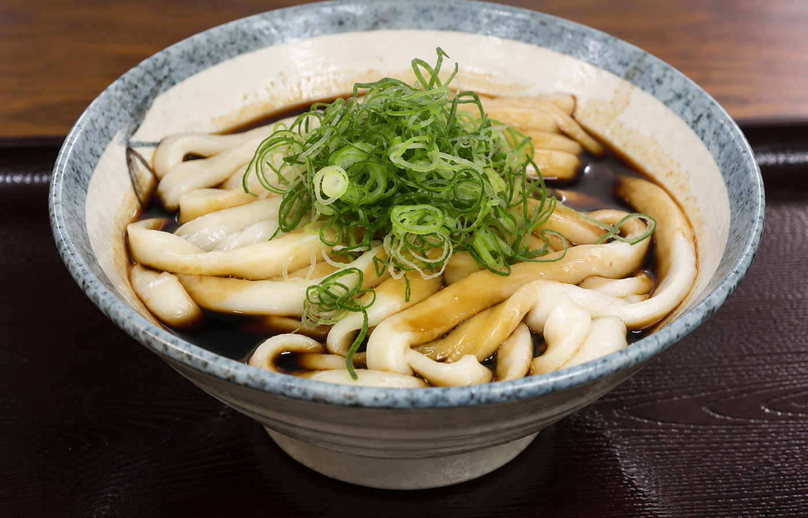
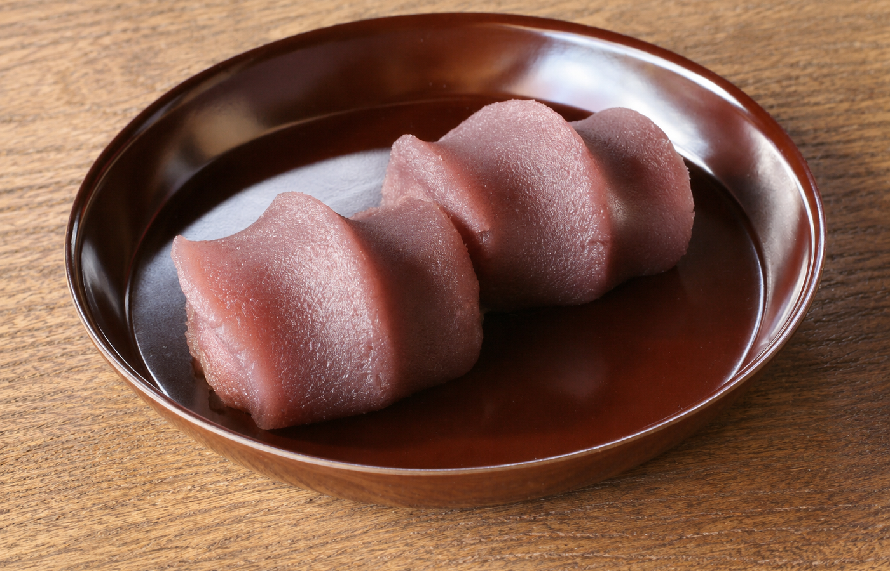
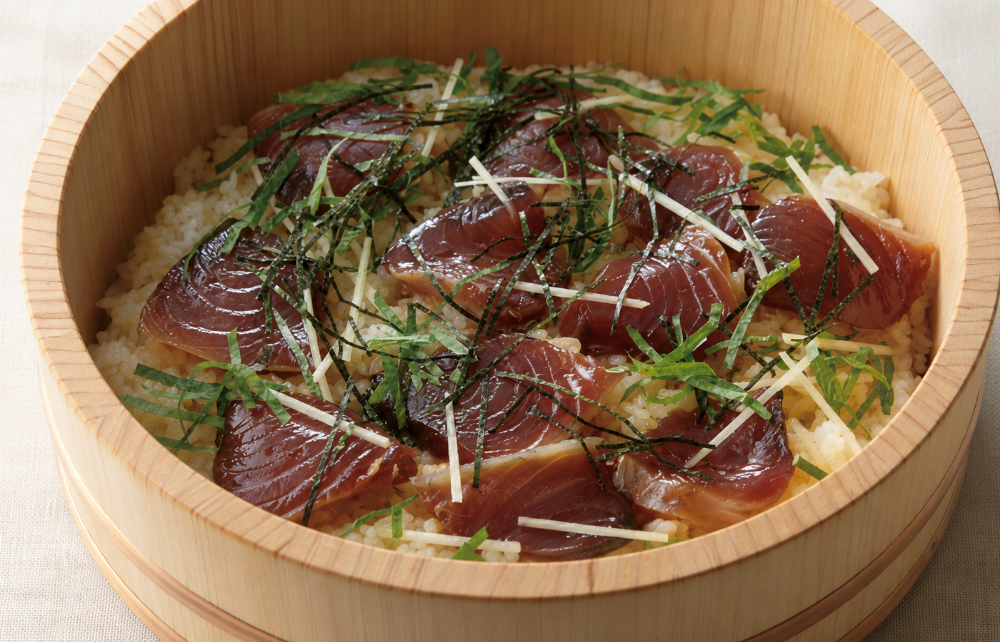

伊勢参りと歴史ある道、
熊野灘の景色を楽しむ旅。
中部国際空港からレンタカーで伊勢へ向かい、伊勢神宮とおかげ横丁を訪れます。 2日目は熊野古道と鬼ヶ城へ足を延ばし、歴史ある石畳と熊野灘の景観を満喫。 伊勢志摩ならではの名物料理も各日の行程に組み込みます。
伊勢神宮、おかげ横丁、熊野古道、鬼ヶ城をめぐり、 松阪牛、伊勢うどん、赤福、てこね寿司を楽しむ2泊3日です。
中部国際空港からレンタカーで伊勢へ向かい、伊勢神宮とおかげ横丁を訪れます。 2日目は熊野古道と鬼ヶ城へ足を延ばし、歴史ある石畳と熊野灘の景観を満喫。 伊勢志摩ならではの名物料理も各日の行程に組み込みます。
伊勢の神域、門前町、熊野古道の石畳、熊野灘の海岸景観を楽しみます。

森に包まれた参道と社殿を訪れ、お伊勢参りならではの空気を感じます。

歴史ある町並みの中で、伊勢の名物や土産物を楽しめる門前町です。

苔むした石畳と杉木立が続く、熊野の歴史を感じる道を訪れます。

波と風がつくり上げた岩壁と、熊野灘の雄大な海景色を眺めます。
三重を代表する肉料理、郷土料理、餅菓子を味わいます。

香ばしく焼き上げた肉の旨みを、三重旅のごちそうとして楽しみます。

太くやわらかな麺に濃い色のたれを絡める、伊勢の定番料理です。

こしあんと餅の組み合わせを、お伊勢参りの甘味として味わいます。

たれに漬けた魚の切り身を酢飯にのせる、志摩地方の郷土料理です。
4月中旬〜下旬は、伊勢神宮周辺の新緑と伊勢志摩の穏やかな海景色を楽しみやすい時期です。 日中は過ごしやすくても、朝晩や海辺は風が冷たく感じる場合があります。 雨天時は鳥羽水族館やミキモト真珠島などへ組み替えます。
伊勢と熊野をつなぎ、景色と名物料理を各日に組み込みます。
中部国際空港でレンタカーを受け取り、伊勢へ。伊勢神宮を参拝した後、おかげ横丁で伊勢うどんや赤福を楽しみます。
熊野方面へ移動し、熊野古道の石畳と森の景色を訪れます。午後は鬼ヶ城で岩壁と熊野灘を眺め、地域の料理を味わいます。
てこね寿司や松阪牛など、旅の中でまだ味わっていない名物を昼食に選び、お土産を購入して空港へ戻ります。
中部国際空港から伊勢方面へ向かい、初日は伊勢神宮とおかげ横丁を中心に巡ります。